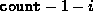
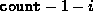

Data Structures and Algorithms
with Object-Oriented Design Patterns in Java
Data Structures and Algorithms
with Object-Oriented Design Patterns in Java
Objects are removed from a searchable container
using the withdraw method.
Program  defines the withdraw method
for the OrderedListAsArray class.
This method takes a single argument which is a
the object to be removed from the container.
It is the specific object instance which is removed from the container,
not simply one which matches (i.e., compares equal to) the argument.
defines the withdraw method
for the OrderedListAsArray class.
This method takes a single argument which is a
the object to be removed from the container.
It is the specific object instance which is removed from the container,
not simply one which matches (i.e., compares equal to) the argument.
Program: OrderedListAsArray class withdraw method.
The withdraw method first needs to find the position of the item to be removed from the list. This part is identical to the main loop of the isMember method. An exception is thrown if the list is empty, or if the object to be removed is not in the list. The number of iterations needed to find an object depends on its position. If the object to be removed is found at position i, then the search phase takes O(i) time.
Removing an object from position i of
an ordered list which is stored in an array
requires that all of the objects at positions
i+1, i+2, ...,  ,
be moved one position to the left.
Altogether,  objects need to be moved.
Hence, this phase takes time.
,
be moved one position to the left.
Altogether,  objects need to be moved.
Hence, this phase takes time.
The running time of the withdraw method is
the sum of the running times of the two phases, O(i)+ .
Hence, the total running time is O(n),
where  is the number of items in the ordered list.
is the number of items in the ordered list.
Care must be taken when using the withdraw method. Consider the following:
Comparable object1 = new Int (57); Comparable object2 = new Int (57); List list = new OrderedListAsArray (1); list.insert (object1);To remove object1 from the ordered list, we may write
list.withdraw (object1);However, the call
list.withdraw (object2);will fail because object2 is not actually in the list. If for some reason we have lost track of object1, we can always write:
list.withdraw (list.find (object2));which first locates the object in the ordered list (object1) which matches object2 and then deletes that object.
 Copyright © 1998 by Bruno R. Preiss, P.Eng. All rights reserved.
Copyright © 1998 by Bruno R. Preiss, P.Eng. All rights reserved.